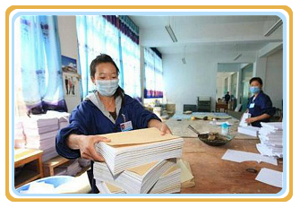

中国印员工日常？中国印告诉你中国印 2018-12-21 16:13
← Sidebar Menu Thingy
印刷工人我认为是中国印公司中整个印刷运作的核心和主力。他们需要操作印刷机器，管理印刷厂的运行并且印刷这项工作的程序复杂需要足够的细心和耐心，随着生活水平的不断提高，印刷厂所占的比例也会越来越大，因此，客户对印刷设计的要求也会越来越高，印刷业也会变得越来越专业。专业的设计机构，专业的印刷厂以及好的售后将会构成更专业的印刷队伍。印刷工人应该熟悉并理解产品，了解受检产品的质量要求。按照技术标准对受检产品进行质量检验工作。严格批量产品的检验工作，检验员有权根据受检产品的质量要求就生产条件、使用材料、检验设备等问题向有关部门提出建设性意见。按照工艺流程，技术标准条件做好每个项目的检查记录，防止错检、漏检，及时发现产品中出现的不良品并打上标记，要求并监督制造方采取有效措施认真管理，防止不良产品、不合格产品混入合格产品而埋下质量隐患。还有一项工作就是打包，把成品按一定的数量用打包纸包成一定的形状，再把两个小包包成一个大包，之后成品进行发货。
其实印刷这项工作也具有许多的危险性的，比如说压板的工作，印刷工人在做压板这项工作时，在操作压板要注意不可以把手放到下压铁下。操作压平机最重要的是安全，压平可以上压或下压，有几吨的重量，操作时切忌手不可以变扶着内侧，头不可以深入内部，要松开按钮才可放书或取书。
说了这么多，我觉得一个优秀的中国印的印刷工人跟一个管理体制严格的印刷公司有很大的关系，如果一家印刷公司非常注重企业制度的建设和管理的话，当生产效能与质量控制出现冲突时，则会先去考虑的是在保证产品质量的前提下，合理进行生产组织和协调，切不可一味追求高效能高产量，并把这一理念落实到各个岗位中的各个工作人员。相信每个印刷工人对自己也会有着一定的要求，制定成本控制目标，负责控制产品生产成本,降低生产物料消耗和能耗，坚持持续改进产品生产质量，确保生产设备完好率，提高设备有效产能等。
中国印正在不断建设，而建设离不开这些工人的努力与劳动。